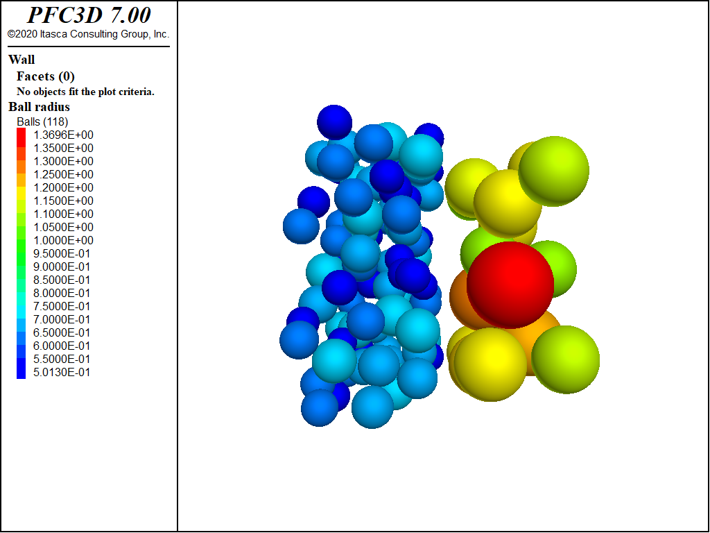
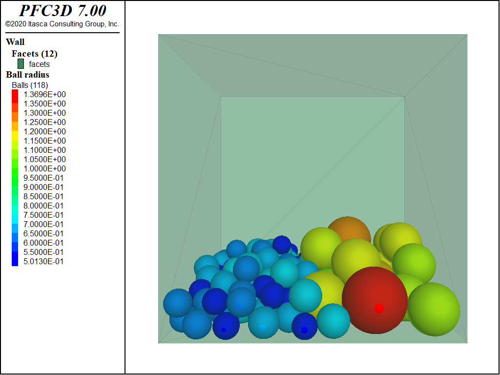
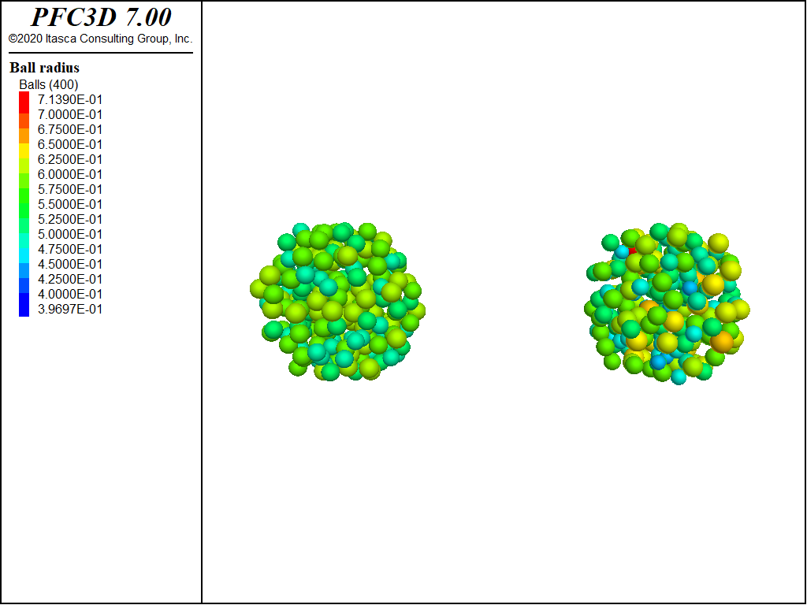
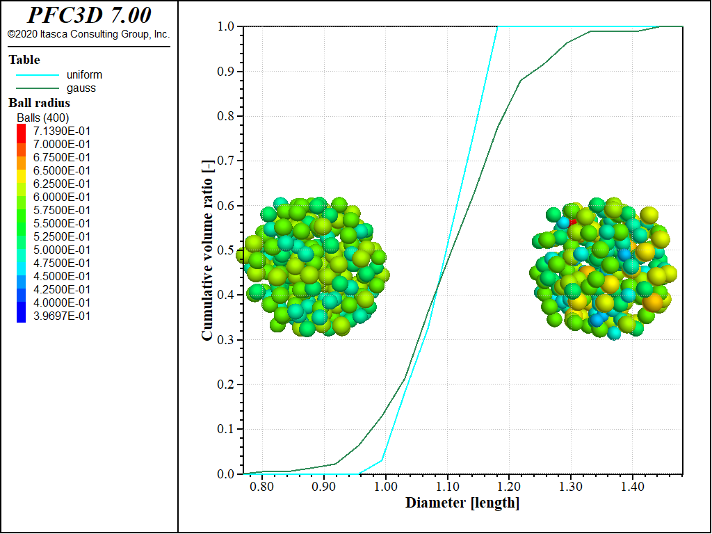
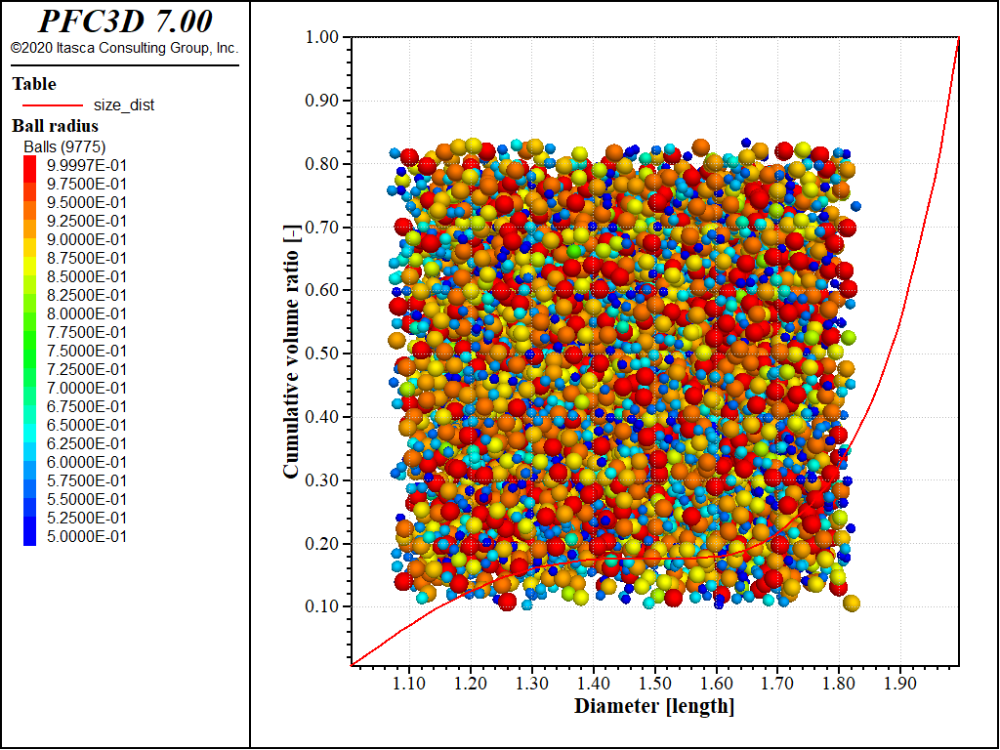

ball generate 命令
语法
- ball generate keyword ... <range>
主要关键字：
长方体（box） cubic FISH 分布（fish-distribution） gauss 分组（group） hexagonal ID 标识（id） 数量（number） radius 尝试次数（tries）
生成互不重叠的球颗粒。当已生成目标数量的球颗粒时，或当尝试放置不重叠球颗粒的次数用尽时，该过程终止。默认情况下，球颗粒的位置和半径在整个模型域内按均匀分布抽取。因此，生成的球颗粒集合受随机数生成器状态的影响（见 设置随机数种子命令（
model random））。球颗粒半径也可通过 gauss 关键字按高斯分布抽取。此外，还通过 cubic 和 hexagonal 关键字支持立方堆积和六方堆积。可选的 range 会在生成时施加于每个球颗粒；如果球颗粒不落在该范围内，则不会加入模型，也不影响停止准则。此命令与ball distribute命令形成对比，后者在分配球颗粒时不考虑重叠，直至达到目标孔隙率。注意
- 在生成球颗粒之前必须指定模型域。
- 在循环计算过程中，只能在循环点 0 之前（即在计算时步时）创建球颗粒。
- box x 向最小值（fxmin ）x 向最大值（fxmax ）<fymin fymax <fzmin fzmax >> （*z* 分量 仅 3D 独有）
球颗粒将完全落在该盒子内，因此不会与盒子的面或 棱边重叠。 默认情况下，该盒子即为模型域。 在 x 方向上指定盒子范围后，如果后续方向的范围 被省略，则使用最近一次指定的范围。
- cubic
球颗粒的位置按产生规则的立方堆积的方式指定，该堆积完全 填满指定区域。球颗粒半径采用最小半径 最小半径系数（fradlow），从而使球颗粒质心沿每个轴向 方向相距 2*最小半径系数（fradlow） 个单位。
- fish-distribution s a1...an
球颗粒半径从 FISH 函数 s 所代表的分布中抽取。函数参数可按 指定，但不 需要任何函数参数。FISH 函数必须返回一个浮点值， 该值即球颗粒半径。FISH 分布不能与 cubic、gauss、hexagonal 或 radius 关键字同时指定。
- gauss <f >
指定球颗粒半径从均值为 (最小半径系数（fradlow） + 最大半径系数（fradhi）)/2、标准差为 (最大半径系数（fradhi） - 最小半径系数（fradlow）)/2 的高斯分布中选取。可选的 f（默认值为 0.1）乘以 最小半径系数（fradlow）， 构成允许的最小半径。不能与 cubic 或 hexagonal 关键字同时给出。
- group s <slot slot > ...
指定为生成的球颗粒赋予分组名 s，位于槽位 槽位（slot）。 如果未指定 slot 关键字，则分组名被赋予 槽位 默认（Default）。
- hexagonal
球颗粒的位置按产生 {二维六方；三维面心立方} 堆积的方式指定，该堆积完全填满生成区域。球颗粒间距采用上限半径 最大半径系数（fradhi）。球颗粒半径从均匀分布中抽取，该分布的最小半径为 最小半径系数（fradlow）、最大半径为 最大半径系数（fradhi）。
- id 最小 ID（idlow ）<idhi >
首个生成的球颗粒的 ID 设为 最小 ID（idlow），默认情况下它是下一个 可用的 ID。若指定 最大 ID（idhi），则用它计算要生成的球颗粒数量。 球颗粒 ID 按顺序选取。指定 最大 ID（idhi） 不会 影响 cubic 或 hexagonal 的行为。
- radius 最小半径系数（fradlow ）<fradhi >
指定生成过程中使用的半径范围。如果未指定 最大半径系数（fradhi）， 则 最大半径系数（fradhi） = 最小半径系数（fradlow）。默认情况下，最大半径系数（fradhi） = 最小半径系数（fradlow） = 1.0。 不能与 fish-distribution 关键字同时给出。
用法示例
ball generate 命令是可用于创建球颗粒的三条命令之一。
替代命令为 ball distribute 和 ball create。如
命令说明中所述，ball generate 将生成
互不重叠的球颗粒，数量不超过指定值，或直至达到指定的
尝试放置新球颗粒的次数。
简单示例
以下代码两次调用 ball generate：第一次在域的左侧生成 100 个半径范围为 0.5 至 0.7
的球颗粒，第二次在域的右侧生成 100 个半径范围为 1.0 至 1.4 的球颗粒。
请注意，大球颗粒的目标数量并未达到——在达到默认的
尝试次数（20,000）后命令即已停止。
; 设置模型域与 CMAT
model domain extent -10.0 10.0 condition periodic
contact cmat default model linear method deformability emod 1e6 ...
kratio 1.25 property fric 0.25
; 生成球
model random 10001 ; 设置随机数生成器的种子
; 以确保可重复性
ball generate radius 0.5 0.7 number 100 box -5.0 0.0 -5.0 5.0
ball generate radius 1.0 1.4 number 100 box 0.0 5.0 -5.0 5.0


图 1：在目标球颗粒数量相同但半径不同的情况下两次执行 ball generate 命令后的
试样。请注意，大球颗粒的生成在达到目标数量之前
即已停止。
上述代码还设置了 域（domain） 的范围以及
接触模型分配表（CMAT） 的默认槽位。此外，使用
设置随机数种子命令（model random） 命令固定随机数生成器的种子，以确保可重复性。
为了开始对颗粒随时间的运动进行积分，设置球颗粒密度， 以及某个非零的局部阻尼系数（以移除系统中的能量），生成 一个包围墙体，打开重力，最后将系统求解到 目标平均比值 0.001。最终状态如图 2 所示， 相应的代码如下。
model large-strain on
; 创建外围盒子，赋予密度和局部阻尼属性
wall generate box -6.0 6.0
ball attribute density 1000.0 damp 0.7
; 设置重力大小并求解
model gravity 10.0
model solve ratio-average 1e-3


图 2：系统在重力作用下于箱体中沉降稳定。
使用内置粒径分布
ball generate 命令提供均匀分布函数与高斯分布函数。
以下代码演示了这两种分布，系统如图
3 所示。
model domain extent -15.0 15.0
model random 10001
ball generate id 1 200 ...
radius 0.5 0.6 ...
box -15.0 -5.0 -5.0 5.0 ...
range sphere center -10.0 0.0 0.0 radius 5.0
ball generate id 201 400 ...
radius 0.5 0.6 ...
gauss ...
box 5.0 15.0 -5.0 5.0 ...
range sphere center 10.0 0.0 0.0 radius 5.0


图 3：采用均匀（左图）与高斯（右图）粒径分布生成的两组球颗粒。
左侧的球颗粒采用均匀粒径分布生成，而
右侧的球颗粒则采用高斯分布生成。请注意
ID 标识（id） 关键字的使用，其中指定的 ID 不得重复。此外，
请注意这两组球颗粒都是在球形范围内生成的。
为评估已生成的粒径分布，可使用 测量逻辑（measure logic）。以下代码创建两个分别包围 每组球颗粒的测量球，并计算它们的累积体积分布 比值。结果导出到表格中，如图 4 所示。
measure create id 1 ...
position-x -10.0 ...
position-y 0.0 ...
position-z 0.0 ...
radius 5.0 ...
bin 20 0.75 1.5
measure create id 2 ...
position-x 10.0 ...
position-y 0.0 ...
position-z 0.0 ...
radius 5.0 ...
bin 20 0.75 1.5
measure dump id 1 table 'uniform'
measure dump id 2 table 'gauss'


图 4：各组球颗粒实测的累积体积比值。
使用自定义粒径分布
FISH 分布（fish-distribution） 关键字还可用于按照
用户定义的分布律生成球颗粒，如下所示，其中采用了
半径范围为 0.5 至 1.0 的 U 型二次累积分布函数。系统如
图 5 所示，同时还给出了由测量球计算得到的累积体积分布
函数。
model random 10001
model domain extent -25.0 25.0
fish define mydist(rmin,rmax)
p = math.random.uniform
a = 12.0/(rmax-rmin)^3
b = 0.5*(rmin+rmax)
temp = (3.0*p/a) - (b-rmin)^3
if temp >= 0.0 then
mydist = b + temp^(1.0/3.0)
else
mydist = b - (-1.0*temp)^(1.0/3.0)
endif
end
ball generate id 1 10000 ...
fish-distribution mydist 0.5 1.0
measure create id 1 ...
position-x 0.0 ...
position-y 0.0 ...
position-z 0.0 ...
radius 25.0 ...
bin 100 1.0 2.0
measure dump id 1 table 'size_dist'


图 5：采用半径范围为 0.5 至 1.0 的 U 型二次分布函数生成的一组球颗粒。
另请参见
| 这些内容对您有帮助吗？… | FLAC3D © 2019, Itasca | 原文更新于 2020 年 10 月 8 日 |